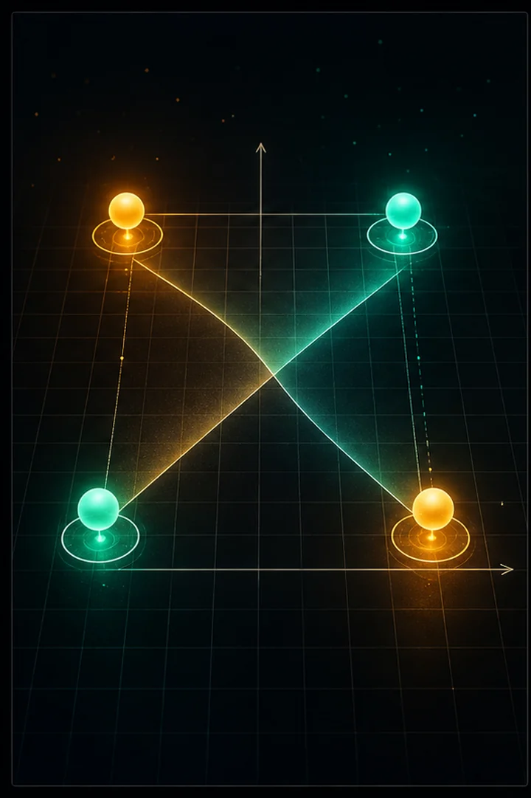
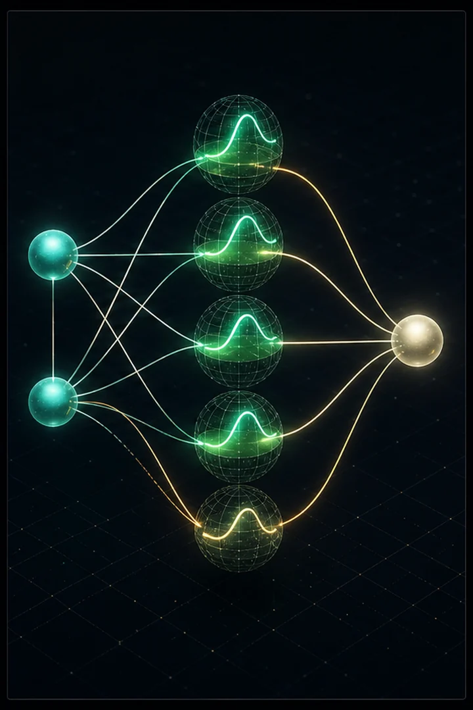
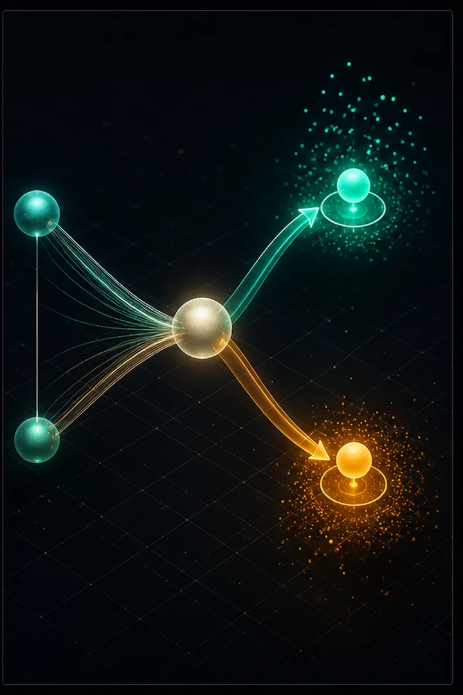

Every LLM is, at bottom, a neural network trained by gradient descent. So we start at the true atom: a two-layer net that learns XOR — the classic problem a single linear layer cannot solve.
It contains the three ideas that never leave: a forward pass (predict), a loss (measure wrongness), and backpropagation (nudge every weight downhill). Written in pure NumPy so nothing hides.
A neuron computes a weighted sum of its inputs and passes it through a nonlinear activation. Stacking a hidden layer of these between input and output makes the network a universal function approximator — with enough hidden units it can represent any continuous function. The nonlinearity is essential: without it, stacked linear layers collapse into a single linear map.
Learning means minimizing a loss (here, mean-squared error) by gradient descent. Backpropagation is just the chain rule applied in reverse: compute how the loss depends on each weight, layer by layer from output back to input, then nudge every weight a small step against its gradient. XOR is the canonical test because it is not linearly separable — a single layer cannot solve it, but a hidden layer learns the intermediate features that can.



Final predictions: [0 0] -> 0.009 (rounded: 0) [0 1] -> 0.984 (rounded: 1) [1 0] -> 0.986 (rounded: 1) [1 1] -> 0.019 (rounded: 0)
"""
A tiny neural network from scratch — learns the XOR function.
XOR is the classic "hello world" of neural nets: it's NOT linearly separable,
so a single layer can't solve it. A hidden layer can. This script shows the
full mechanics — forward pass, loss, and backpropagation — in pure NumPy.
Run with: python neural_network.py
"""
import numpy as np
def sigmoid(x):
"""Squashes any number into the range (0, 1) — our activation function."""
return 1 / (1 + np.exp(-x))
def sigmoid_derivative(out):
"""Gradient of sigmoid, expressed in terms of its OUTPUT (out = sigmoid(x))."""
return out * (1 - out)
class NeuralNetwork:
"""A 2-layer feedforward net: input -> hidden -> output."""
def __init__(self, n_inputs, n_hidden, n_outputs, seed=42):
rng = np.random.default_rng(seed)
# Weights are small random values; biases start at zero.
# W1 connects inputs -> hidden, W2 connects hidden -> output.
self.W1 = rng.normal(size=(n_inputs, n_hidden))
self.b1 = np.zeros((1, n_hidden))
self.W2 = rng.normal(size=(n_hidden, n_outputs))
self.b2 = np.zeros((1, n_outputs))
def forward(self, X):
"""Push inputs through the network to get a prediction."""
self.z1 = X @ self.W1 + self.b1 # weighted sum into hidden layer
self.a1 = sigmoid(self.z1) # hidden layer activations
self.z2 = self.a1 @ self.W2 + self.b2 # weighted sum into output
self.a2 = sigmoid(self.z2) # final prediction
return self.a2
def train(self, X, y, epochs=10000, lr=0.5):
"""Learn the weights via gradient descent + backpropagation."""
for epoch in range(epochs):
# --- Forward pass: compute predictions ---
pred = self.forward(X)
# --- Loss: mean squared error (how wrong we are) ---
loss = np.mean((y - pred) ** 2)
# --- Backward pass: how should each weight change? ---
# Chain rule from the loss back to every parameter.
d_pred = (pred - y) * sigmoid_derivative(self.a2) # error at output
d_W2 = self.a1.T @ d_pred
d_b2 = np.sum(d_pred, axis=0, keepdims=True)
d_hidden = (d_pred @ self.W2.T) * sigmoid_derivative(self.a1) # error at hidden
d_W1 = X.T @ d_hidden
d_b1 = np.sum(d_hidden, axis=0, keepdims=True)
# --- Gradient descent: nudge weights opposite the gradient ---
self.W2 -= lr * d_W2
self.b2 -= lr * d_b2
self.W1 -= lr * d_W1
self.b1 -= lr * d_b1
if epoch % 1000 == 0:
print(f"epoch {epoch:5d} loss {loss:.4f}")
if __name__ == "__main__":
# The 4 XOR examples: output is 1 only when inputs differ.
X = np.array([[0, 0], [0, 1], [1, 0], [1, 1]])
y = np.array([[0], [1], [1], [0]])
net = NeuralNetwork(n_inputs=2, n_hidden=4, n_outputs=1)
net.train(X, y)
print("\nFinal predictions:")
for inputs, prediction in zip(X, net.forward(X)):
print(f" {inputs} -> {prediction[0]:.3f} (rounded: {round(prediction[0])})")